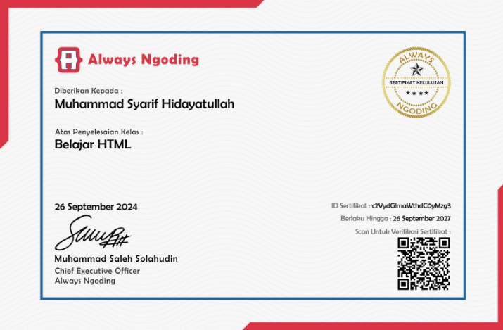
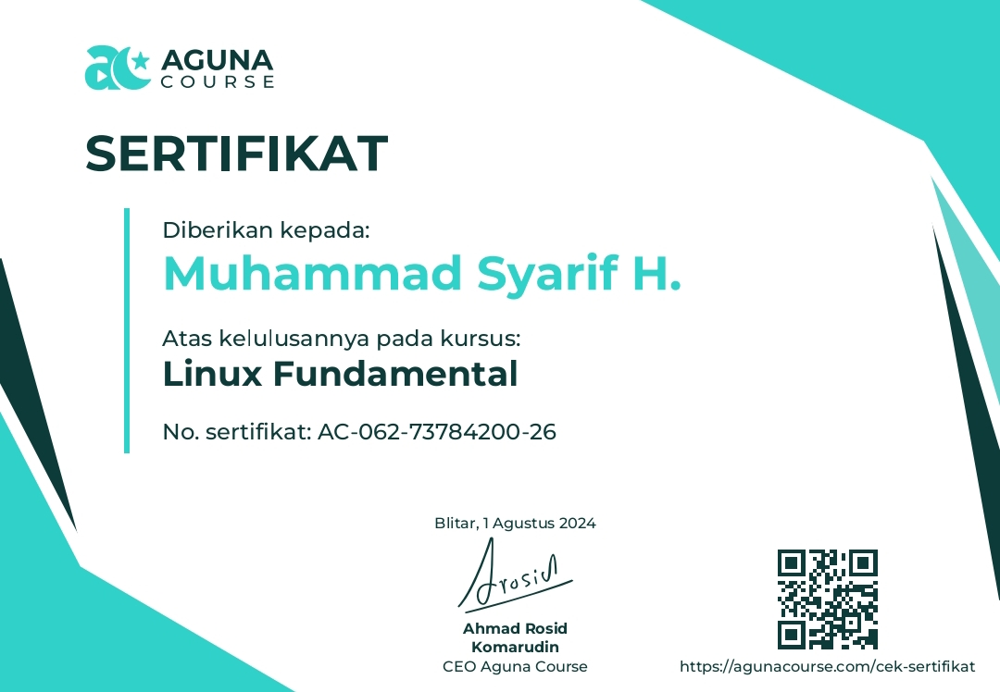

Tentang Saya
Perkenalkan, nama saya Muhammad Syarif. Saya adalah seorang siswa yang memiliki minat besar dalam bidang teknik komputer jaringan. Saya memiliki ketertarikan yang kuat pada pemahaman infrastruktur jaringan, keamanan siber, dan pengelolaan sistem.
Saat ini, saya sedang aktif belajar dan mengembangkan keterampilan di berbagai aspek TKJ, termasuk konfigurasi perangkat jaringan, troubleshooting, dan implementasi solusi jaringan. Saya bersemangat untuk terus belajar dan berkontribusi dalam dunia teknologi informasi.
Keahlian
- Networking
- System Administration
- Network Security
- Infra
- Pemrograman Web
Proyek Saya

Sertifikat HTML Fundamental
dari Always Ngoding

Sertifikat Linux Fundamental
dari Aguna Course

Sertifikat Network Fundamental
dari Aguna Course

Sertifikat Virtual Machine Fundamental
dari Aguna Course
Sertifikat threatlandscape
dari Fortinet Training Institute